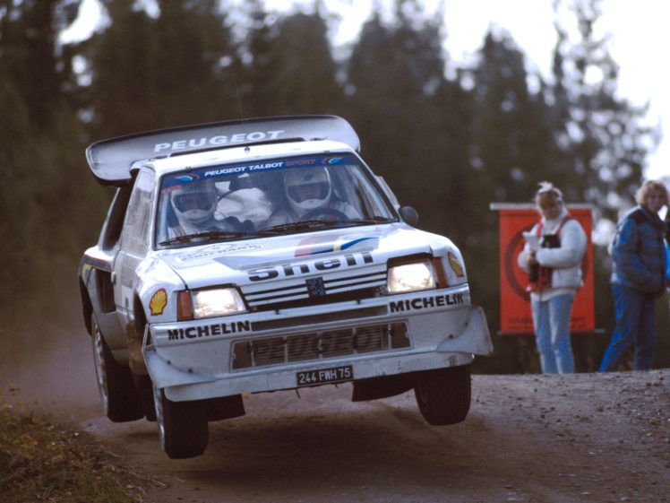
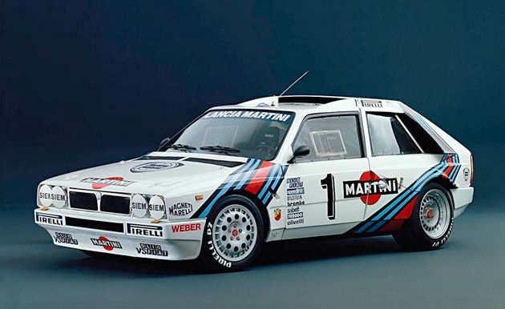
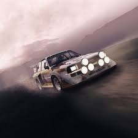

os carros mais infames do Grupo B

O Peugeot 205 T16 foi um dos carros mais icônicos e bem-sucedidos da era do Grupo B. Com seu design
compacto e ágil, aliado a um motor turboalimentado de 1,8 litros que produzia até 500 cv, o 205 T16
demonstrava uma incrível performance nos ralis. Seu chassi, feito de materiais leves como o alumínio
e composto de fibras de carbono, contribuía para um peso reduzido e uma aceleração impressionante. O
Peugeot se destacou tanto pela sua velocidade quanto pela sua habilidade de atravessar terrenos
irregulares, mas a grande potência e a natureza nervosa do carro tornavam-no perigoso, especialmente
em mãos menos experientes. O 205 T16 ajudou a consolidar a Peugeot como uma das marcas mais
vitoriosas da história dos rallys, mas também é lembrado pelos riscos que trazia, com vários
acidentes graves ao longo de sua carreira.

O Lancia Delta S4 foi uma verdadeira máquina de rally, desenvolvido para a temporada de 1985. Com um
motor híbrido, combinando um turboalimentador e um supercompressor, o Delta S4 gerava até 500 cv,
tornando-se um dos carros mais poderosos e rápidos do Grupo B. Sua estrutura leve e avançada,
juntamente com a tração integral, lhe conferia incrível agilidade, mas também o tornava imprevisível
e difícil de controlar, especialmente nas condições extremas dos ralis. Infelizmente, a combinação
de desempenho extremo e estabilidade limitada resultou em diversos acidentes fatais, incluindo o
trágico acidente que tirou a vida de Henri Toivonen e seu copiloto em 1986. Após o fim do Grupo B, o
Delta S4 se tornou um símbolo da era mais perigosa do rally

O Audi Quattro S1 foi um marco na história dos rallys, introduzindo a tração integral em um carro de
competição e transformando o panorama das corridas no Grupo B. Desenvolvido para enfrentar o domínio
da Lancia e do Peugeot, o Quattro S1 era um verdadeiro colosso com mais de 500 cv de potência. Sua
tração nas quatro rodas permitia uma aderência excepcional em superfícies escorregadias, mas a sua
potência, combinada com uma dirigibilidade complexa, tornava-o imprevisível em altas velocidades.
Além disso, seu desempenho em terrenos difíceis e suas explosões de potência o tornaram uma arma de
duas faces, causando vários acidentes. O Quattro S1 foi vital para a popularização dos carros de
rally com tração integral, mas também foi símbolo do perigo que permeava a era do Grupo B.